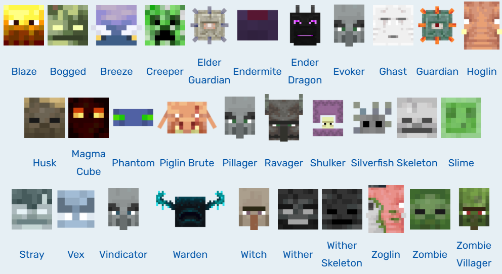
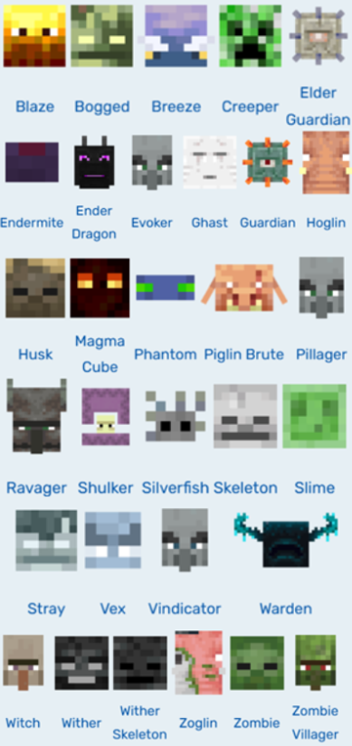

HOSTILE MOBS
What are hostile mobs?
Hostile mobs are dangerous, aggressive mobs that always attack the player within their respective detection ranges. Click the image below to read about a few examples.
All of the hostile mobs:
Click to see more about.
Image from: https://minecraft.fandom.com/wiki/Mob
All of the hostile mobs:
Click to see more about.
Image from: https://minecraft.fandom.com/wiki/Mob